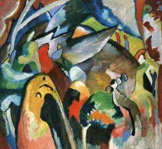

a necessary transition from the depiction of external shapes of the world to their inner content. achieved a certain emotional response of the audience using only colors, lines and abstract shapes
Wassily Kandinsky
Oil on canvas. 38.2 × 41.7" (97.0 × 106.0 cm)
Wassily Kandinsky
Oil on canvas. 38.2 × 41.7" (97.0 × 106.0 cm)

Improvisation 19A, 1911
Oil on canvas. 38.2 × 41.7"
Kandinsky was one of the first artists to explore abstraction. He used the name Improvisation as a reference to a musical composition. He is associating painting with music, as if he were composing with form and colors.
Wassily Kandinsky
Watercolor and pencil on paper. 14 x 17 5/8" (35.6 x 44.8 cm)
Wassily Kandinsky
Watercolor and pencil on paper. 14 x 17 5/8" (35.6 x 44.8 cm)
Improvisation c, 1914
Watercolor and pencil on paper. 14 x 17 5/8"
The factory chimneys jut into the sky in striking tones of red. This bright piece verges on Fauvist in how the original tones that the artist would have seen are almost entirely replaced with his contemporary use of yellow, purple and blue. There is enough of a connection to reality with greens on the tips of the hills and blue across the sky to help us immediately recognise the compositional elements, but then the rest diverges into the world of Kandinsky where traditional thinking is thrown away and a more expressive style is used.
Wassily Kandinsky
Oil on canvas. 66.2 x 82 cm (26 x 32 1/4 inches)
Wassily Kandinsky
Oil on canvas. 66.2 x 82 cm (26 x 32 1/4 inches)
Landscape with Factory Chimney, 1910
Oil on canvas. 26 x 32 1/4"
During the period 1908 to 1914, Vasily Kandinsky spent time in Murnau at the foothills of the Alps, painting the surrounding landscape and experimenting with color, perspective, and the distortion of forms .Landscape with Rain was dates from 1913, which was a period in which Kandinsky was focusing mainly on abstract landscape artworks.
Wassily Kandinsky
Oil on canvas 27.6 × 30.7" (70.2 × 78.1 cm)
Wassily Kandinsky
Oil on canvas 27.6 × 30.7" (70.2 × 78.1 cm)
Landscape with Rain, 1913
Oil on canvas 27.6 × 30.7"
In Landscape with Two Poplars, Kandinsky presents a scene that has not been completely abstracted, yet neither are the forms entirely representational of nature. Utilizing intense hues of red, green, yellow and blue, Kandinsky has contorted the houses, trees and grounds into unmodulated patches of nonmimetic color and irregularly shaped triangular forms. As if taken from a dream, the setting is distorted into oddly bending roofs and off-kilter treetops that blend into an indeterminate landscape of jumbled red, yellow and blue blotches. Kandinsky creates an implied sense of perspective through the diagonal pathways that lead us into the center of the painting and by the cool, blue rise of the foothills beyond that appear to recede into the distance. Though we may have difficulty recognizing this scene as one from nature (where is that second poplar?), the tone is not off-putting; rather, the bold, bright colors elicit a cheerful, almost harmonious sensation.
Wassily Kandinsky
Oil on canvas, 31 x 39"
Wassily Kandinsky
Oil on canvas, 31 x 39"
Landscape with Two Poplars, 1912
oil on canvas, 31 x 39"
Moscow for Kandinsky is a big confusion, so everything in his paintings is intertwined, confused, incomprehensible. But if you look closely, you can see the famous pavement in Red Square. You can see little men, and even a building that looks like the Bolshoi Theater.
Wassily Kandinsky
Oil on canvas, 20.3 × 19.5" (51.5 × 49.5 cm)
Wassily Kandinsky
Oil on canvas, 20.3 × 19.5" (51.5 × 49.5 cm)
Red Square in Moscow, 1916
Oil on canvas, 20.3 × 19.5"